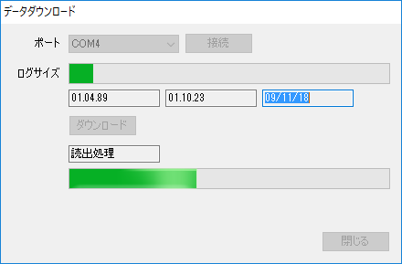

このソフトウェアは現状のまま(as is)提供するソフトウェアでであり、予期せぬ挙動により問題が生じる可能性は否定できず、本ソフトウェアの利用により発生するいかなる事象・問題について保証および補償することはで来ません。
このソフトウェアは無料で利用することができますが、各位の善意と工夫によってご利用ください。
このツールは、主にGPSで取得した情報とJPEGファイルの時間を比較し、そのJPEGファイルに位置情報を書き込むためのツールです。
このような機能をもったツールは多くあり、たとえばPicasaやViewNXなどがあります。
これらのツールと「場所を焼きこむツール」との違いは、GPS Loggerからのデータ取り込みと位置情報の書き込みをセットで行えることにあります。
たとえば、ViewNXで位置情報を書き込む場合、任意のGPS Loggerで取得したGPXファイルや、Google timelineから取得したKMLを変換したGPXファイルと照合して、対象となるJPEGファイルに位置情報を書き込みます。GPS Loggerからデータを取り込むためにはGPS Babelや付属のソフトを利用して、GPXファイルやnmeaファイルを作成します。つまり、２つ以上のファイルを利用する必要があります。
これに対して、「場所を焼きこむツール」ではGPS Loggerからの取り込みをプラグインとして持つことで、１つのツールでPGS 情報の取り込みとJPEGファイルへの位置書き込みを行うことができます。
つまり、あれこれと手間をかけることなく位置情報を書き込むことを目的としたツールが「場所を焼きこむツール」なのです。
zipファイルを解凍してできたファイルを任意のフォルダに格納します。
Bayaki.exeを起動します。
Bayaki.exeは、データを「マイドキュメント」に「Bayaki Folder」というフォルダを作成して保存します。
プラグインをインストールする場合、「位置情報元」のタブをクリックして、位置情報元リストに移動します。
表示されているツールバーを右クリックして、表示されるコンテキストメニューから「プラグイン追加」を選択します。
プラグインはDLLファイルの形式です。対応したプラグインの場合、下記のようにアイコンが追加されます。
下記の例では[SkyTraqPlugin.dll]と[GPSBabelPlugin.dll]プラグインの両方をインストールしています。
前述したとおり SkyTraq社のVenus6に対応したプラグインです。
GPS Logを保存する閾値を設定します。
「時間」を選択した場合、GPS情報は設定した周期（秒）で記録されます。
「距離」を設定した場合、GPS情報は設定した距離（メートル）ごとに記録されます。
「速度」は最低記録速度です。
SkyTraqのLogデータを取り込みます。

GPS Loggerを接続した状態でポートを選択して「接続」をクリックします。
対象ポートは「自動」を選択することで自動で選択されます。
接続でき場合「ダウンロード」をクリックすることで、データを取り込むことができます。
※ポートの一覧は画面が表示されるときに取得します。GPS Loggerはこの画面を表示する前に接続してください。
SkyTraqのLogデータを消去します。
GPS Loggerを接続した状態でポートを選択して「消去」をクリックします。
対象ポートは「自動」を選択することで自動で選択されます。
※ポートの一覧は画面が表示されるときに取得します。GPS Loggerはこの画面を表示する前に接続してください。
A-GPS(Ephemeris)データをSkyTraqのサーバからダウンロードして、GPS Loggerに設定します。
対象のポートを選択して「開始」をクリックしてください。以降は自動でデータをダウンロードしてGPS Loggerに書き込みを行います。
GPS Babelのコマンドラインプログラムを実行してデータを取得するプラグインです。このプラグインを利用することで、GPS BabelがサポートするGPS Loggerからデータを取り込むことができます。
「GPSBabel.exeのパス」には、GPSBabelのコマンドライン版のパスを指定してください。
「起動時のパラメータ」は取り込みを行うためのGPSBabelのパラメータを設定します。
-oと-Fはプラグイン側で自動に付加するので、設定しないでください。なお、-oは[gps]を指定し、-Fは一時ファイルを指定します。この一時ファイルは取り込み後に削除しています。
コマンドラインの設定がわからない場合、GPSBabelのGUI版（GPSBabelFE.exe）で取り込みを行い、成功した画面のパラメータをコピーしてください。コピー対象は下記の赤線で囲っている（GPBabelと-o -Fを除く）範囲になります。
※画面をキャプチャーしたGPSBabelのバージョンは1.5.3ですが、指定していないパラメータを誤設定するという不具合があって、Set Locationに対応しないGPS Loggerでは取り込みが失敗するという問題があり、上記の画面でも取り込みができていません。現在のリポジトリ(skytraq.cc)を見ると修正されているようですが、対応版はリリースされていません(2016/03/26)。
余談ですが、このGPS Babelの不具合がこのツールを作成するきっかけになっています。
[GPS Import]/[KML Import]/[Skytraq logdata download]/[GPSbabel wrapper]のいずれかからGPSデータを取り込みます。
取り込みが成功した場合、下記のように一覧に取り込んだデータが追加されます。
Google Map Timelineは、スマフォなどの位置情報を記録する機能ですが、このデータをKML ファイルとしてダウンロードすることできます。GPS Loggerを持っていない場合、このKMLを位置情報元として利用することもできます。また、GPS Loggerを持っている場合でもKMLと併用することで、GPS Loggerにないデータを補完できる場合があります。
位置情報元のリストのコンテキストメニューから「道順表示」を選択すると、経路情報として地図表示から確認することができます。
記録開始と終了、Waypoint（POI）については、マーカーを表示します。マーカーにカーソルを重ねると時間と位置情報を確認できます。
位置情報を取り込んだら、位置情報を設定したいJPEGファイルを「JPEGファイルをここにドロップしてください」と表示されている領域にドロップしてください。
ドロップしたファイルがサムネイル表示されます。
対象のサムネイルを選択するとプレビュー表示と、位置情報に従った地図表示を行います。
サムネルは位置情報の状況によって色が変わります。
更新すべき状態である場合には自動でチェックされますが、ユーザ操作で保存対象から外すことができます。
なお、青で表示されているJPEGファイルにチェックを入れた場合、位置情報の削除と同じ動作になります。
プレビュー表示エリアを右クリックして表示されるコンテキストメニューから、位置情報の削除と新規追加を行うことができます。
また、地図のプレビュー画面でマーカーをドラッグすることで位置情報を調整することができます。
「保存更新」をクリックすると、チェックボックスがチェックされているJPEGファイルを位置情報を更新します。